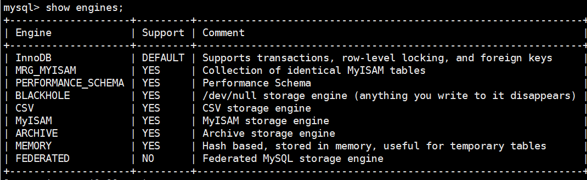

数据库类
MySQL
mysql 更改用户密码方式
(1) 登录mysql后，使用如下命令修改1
mysql> set password for username@localhost = password('new password')
(2) 不登录mysql, 使用 mysqladmin更改
1
mysqladmin -u用户名 -p旧密码 password新密码
(3) 登录mysql，使用update直接编辑user表
1
2
3mysql> user mysql;
mysql> update user set password = password('new password') where user='root' and host='localhost';
mysql> flush privilegesmysql数据库有哪几种引擎，各个引擎的区别？
数据库引擎是数据库用于存储，处理和保护数据的核心服务，不同数据库引擎有其各自的特点，主要体现在存储机制，索引技巧，主键处理，锁粒度等方面。针对自己的项目特点选择合适的数据库引擎可以改善服务端存储性能。mysql中数据库引擎如下图:

(1) InnoDB (默认引擎)- 特点:
- 事务型存储引擎。支持ACID (原子性，一致性，隔离性，持久性)
- 具有行级锁定。(锁的粒度小，写数据时，不需要锁住整个表，适用于高并发)
- 支持外键。(唯一一个支持外键的引擎)
- 支持自动增加列
- 优缺点：
- 优点：提供了良好的事务处理，崩溃恢复，和并发控制
- 缺点：读写效率一般，磁盘占用空间大; 不支持全文索引
- 适用场景：用于高并发，表需要经常更新与查询; 可靠性要求高，需要支持灾难恢复(通过bin-log日志)的场景; 适合处理大容量数据，运行时在内存中建立缓冲池，缓存数据以及索引。
(2) MyISAM (以前的默认引擎)
- 特点：
- 表级锁。更新时，锁定整张表，降低了并发性能
- 只缓存索引，不缓存数据
- 支持全文索引
- 优缺点：
- 优点: 查询速度快，磁盘占用空间少; 独立于操作系统
- 缺点：不支持事务的完整性和并发性
- 适用场景：需要做很多count运算，查询频繁，修改较少，没有事务需求的场景，如blog
(3) MEMORY
- 特点:
- 默认使用hash索引, 数据放在内存中
- 优缺点:
- 优点：数据查询最快
- 缺点：要求存储定长格式的数据
- 适用场景：一般用于存储操作的中间结果表，对中间结果高效分析并得到最终统计结果；适用于目标数据较小，并且需要非常频繁地进行访问
(4) Archive
- 优缺点：
- 优点：占用空间小
- 缺点：不支持事务；不支持update和delete
- 适用场景：用于数据归档，压缩比高，存储空间比innodb 小一量级，适合存储历史数据，如日志信息；提供高速的插入和压缩功能
(5) CSV, BlackHole
- 以csv格式存储数据，不支持索引，所有列不为NULL
- 特点:
https get 和 post 的区别
- get 参数通过url传递，post 放在 request body 中
- get 请求传参有长度限制(url)，post没有
- get 只支持URL编码，post支持多种编码
- get 请求会被浏览器主动cache, post 不会
- get 请求在浏览器回退时是无害的，post回退时会再次提交请求
- 大部分浏览器上，(火狐除外) get 系那将header 与 data 合并产生一个TCP数据包发送； post先发heaer, 再发data, 两个tcp包，因此post消耗时间多些。注意 这并不是http中规定的，而是浏览器或者框架所造成的不同
http 状态码
- 200 正常
- 304 服务端资源无变化，可使用缓存资源
- 400 请求参数不合法
- 401 未认证，未授权
- 403 禁止但访问
- 404 未找到该资源
- 500 服务端异常
2>&1
linux 中 0 表示stdin, 1 表示 stdout, 2 表示 stderr